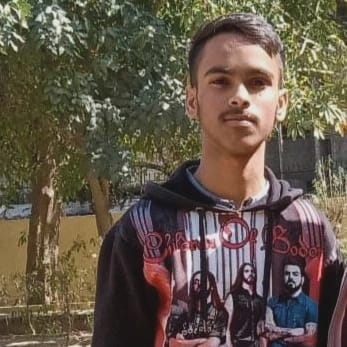

Sonak Jha

Summary
Aspiring Software Developer skilled in C, C++, SQL, and data structures,
with a strong passion for coding and problem-solving.
I have hands-on experience with academic projects,
where I developed efficient algorithms and worked with databases.
Education
Indira Gandhi National Open University
(IGNOU) Bachelor's Degree in Computer Applications (2023 - 2027)
CBSE Board
Class 12 (2022 - 2023)
Class 10 (2020 - 2021)
Skills
- Programming Languages : C, C++, Python
- Web Development : HTML, CSS, JavaScript
- Database Management : SQL, MySQL
- Software Development : Object-Oriented Programming
- Version Control : Git, GitHub
- problem-solving and algorithm development skills
- Data Structures and Algorithms : Linked Lists, Sorting Algorithms
- Problem-Solving : Strong analytical skills with a focus on code optimization
- Communication and Teamwork : Effective communication and ability to work collaboratively
- Software Tools : Visual Studio Code, Eclipse.
Strength
- Problem-solving: Effective at analyzing issues and finding innovative solutions.
- Team Collaboration: Strong ability to work effectively in diverse team settings.
- Adaptability: Quick learner, adaptable to new technologies and environments.
- Attention to Detail: Strong focus on accuracy and quality.
- Time Management: Efficient in prioritizing tasks and meeting deadlines.
Others
@ Sonak Jha. All Right Revised